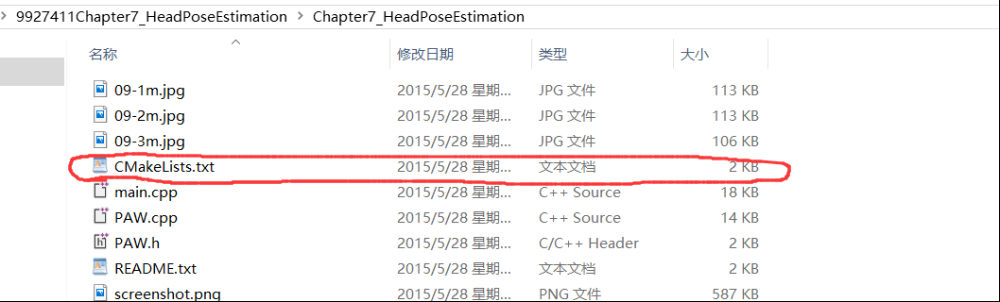
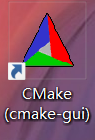
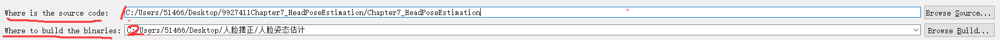
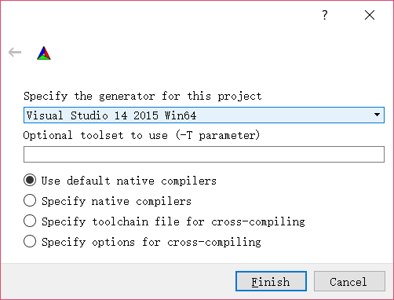
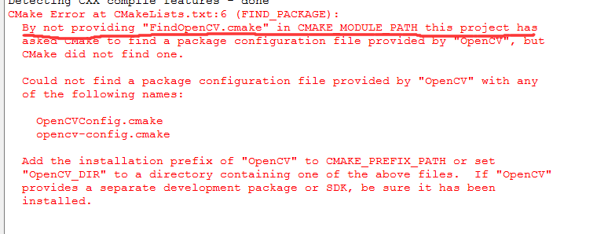
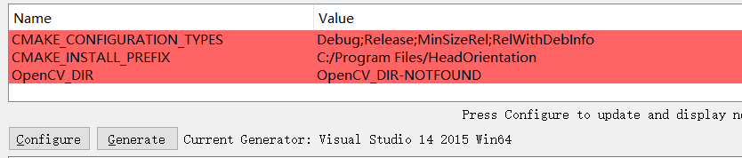
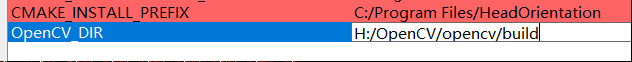
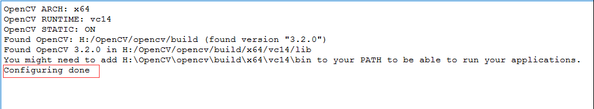
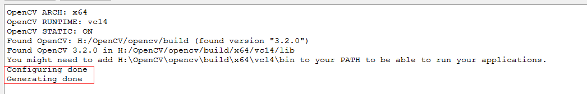

Catalogue
Windows下如何使用makefile
参考这里
关于CMake的使用
CMake通常是可以通过cmakelist这个文件来生成相关的工程文件，比如我使用c++编程，使用vs2015的话，就需要打开sln这个工程文件来查看整个工程，包括其中的头文件和cpp文件。这时我们就需要使用cmake来生成这个对应的sln文件
- 确认
cmakelist.txt文件的位置，并确认其确实存在

打开我们已经下载好的cMake程序

此时会显示如下窗口

- 第一行代表的是你要生成工程文件的源代码文件在哪，换句话说，就是cmkelist文件在那个路径
- 第二个代表的是你要把生成的工程文件（夹）放在哪个路径下面，可以通过点击后面的按钮来选择路径
之后点击
Configure，显示如下，其中第一个下拉菜单表示你要生成的工程文件是那个程序使用的，下拉菜单里有很多很多，包括什么arm平台之类的，根据自己的实际情况来进行选择，别的不知道是什么，就不管了，直接点击Finish

若出现了错误信息

意思是我在
opencvpath这个地方找不到opencv的cmake文件，应该对应其他的库会出现其他的错误信息，在这里我还没有遇到，遇到了以后会继续补充。然后我们看上面

OpenCV_DIR这一栏写着not found，说明这里就是指示opencv的cmke的路径，我们把这里更改一下
再点击
configure，出现如下信息
这样的话再点击generate，出现generating done的提示信息，就说明工程文件生成成功啦。
